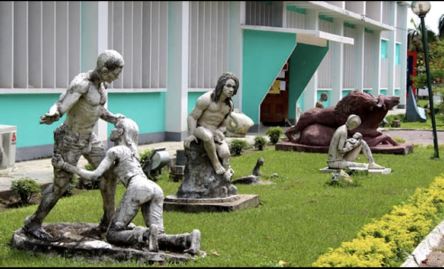
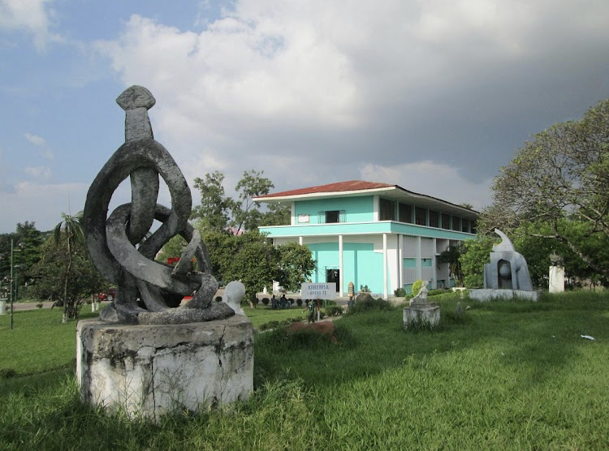
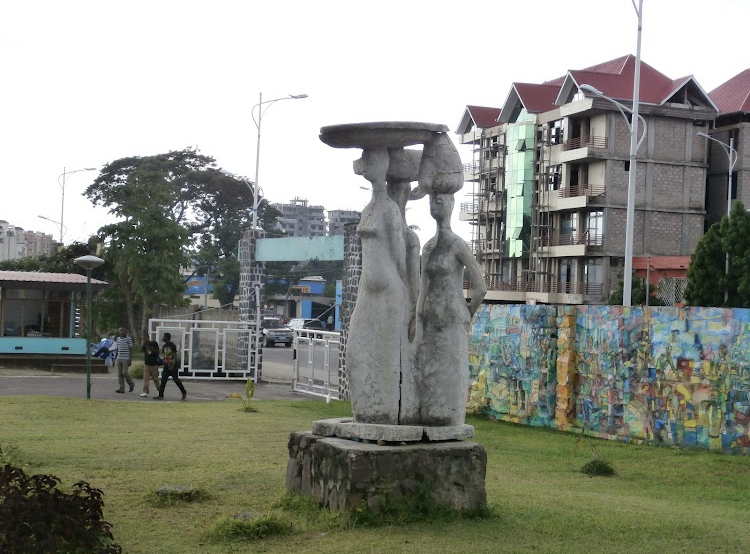

L'Académie des Beaux-Arts est un institut d'enseignement des arts visuel et des arts appliqués.L'ABA enseigne les arts graphiques(architecture d'intérieur et communication visuelle) et les arts plastiques(céramique,métal battu, peinture et sculpture).En 1943,l'ABA est fondée comme une école Saint-Luc à Gombe Matadi dans la province du Bas -congo par le missionnaire belge Marc Wallenda.En 1949,l'école est transférée à Léopoldville(Kinshasa)et est renommée Académie des Beaux-Arts en 1957. La réforme de l'Ensaignement supérieur et universitaire au zaire, ordonnance-loi numero 01-170 du 7 octobre 1981, intègre l'Académie des beaux-Arts dans l'ensemble des instituts supérieurs techniques nationaux. Elle est située dans Gombe et est à cheval entre l'avenue de la libération, l'avenue de la science, l'avenue rivière. Elle héberge aussi la Musée national de Kinshasa et l'institut superieur d'architecture et urbanisme.Elle a été solicite plusieur reprises pour la réalisation de monuments par le president Mobotu Sese Seko.
.Ateliers spécialisés
.Modules d'histoire de l'art et d'esthétique
Parc avec sculptures
salle d'exposition